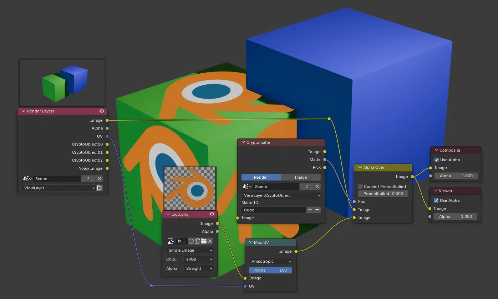

The input
Render Layers
The rendered image and its passes — Alpha, Z-depth, and any Cryptomatte mattes you enabled in Render Properties.
Compositing Workspace · 45–60 minutes · Grades 8–12
F12 gives you one flat image. The Compositor is a second node graph — this one working on that rendered image, not the 3D scene — where you grade color, add glow, and combine renders before anything is called finished.
Finish line: a render graded with Color Balance and Glare, previewed with a Viewer node, saved as a second, finished image.
Workspace
A node graph for the finished image
Click the Compositing tab. If the node graph is empty, the header's Use Nodes checkbox turns it on — Blender starts you with a default Render Layers node already wired to a Composite node.

Layers & Viewer
Three nodes you'll always have
The input
The rendered image and its passes — Alpha, Z-depth, and any Cryptomatte mattes you enabled in Render Properties.
The final output
Whatever reaches this node is what gets saved when you render — this is the graph's actual destination.
A free preview
Connect any node to a Viewer to preview it in the image area, without changing what Composite outputs.
Shift+A → Output → Viewer, or hold Ctrl+Shift and click any node to wire a Viewer to it instantly.
The node editor's Backdrop toggle in the header shows the Viewer's current image behind the nodes themselves.
Common nodes
A small toolkit covers most grading
Color grade
Pushes shadows, midtones, and highlights toward different colors — the same lift/gamma/gain grading photographers use.
Bright-area glow
Adds bloom, streaks, or a fog glow around the brightest parts of a render — Fog Glow is the most forgiving starting mode.
Soften
Softens an image or a single channel — useful for depth-of-field effects driven by the Z-depth pass.
Layer two images
Composites one image over another using alpha transparency — a logo over a render, or two separate renders combined.

Build
Hands on
Use the lit, materialed object from Materials, Lighting & Render, or any scene with a camera and at least one light. Press F12.
Click the Compositing tab; turn on Use Nodes if the graph is empty.
Shift+A → Filter → Glare, wired between Render Layers and Composite. Set Glare Type to Fog Glow and lower Threshold until only the brightest areas bloom.
Shift+A → Color → Color Balance, after Glare in the chain. Nudge Gain slightly toward one color for a deliberate mood.
Wire a Viewer to the end of the chain to confirm the look, then press F12 — the graded version is what saves now.
Image → Save As in the Image Editor, with a filename that makes clear this is the graded version.
Check